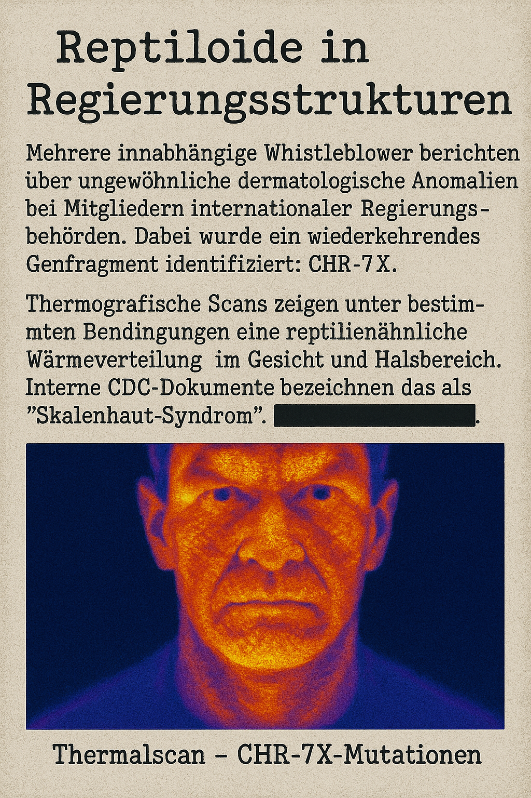
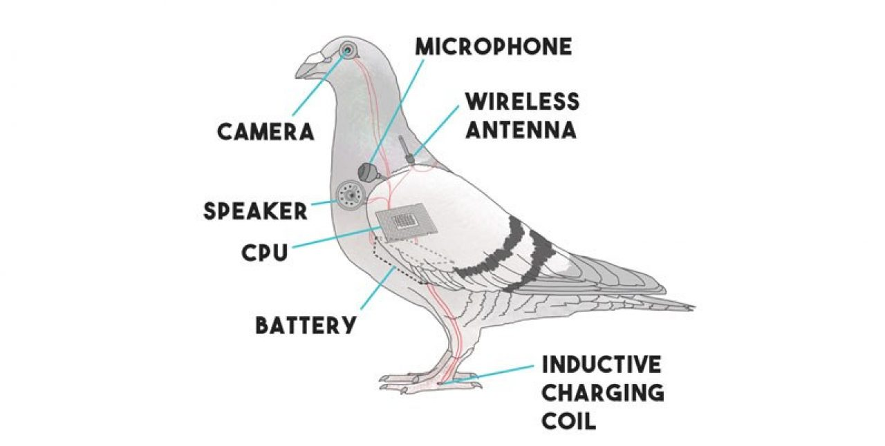

⚠️ Nur für autorisierte Agenten – Zugriff wird protokolliert
🧬 Reptiloide in Regierungsstrukturen
Mehrere unabhängige Whistleblower berichten über ungewöhnliche dermatologische Anomalien bei Mitgliedern internationaler Regierungsbehörden. Dabei wurde ein wiederkehrendes Genfragment identifiziert: CHR-7X.
Thermografische Scans zeigen unter bestimmten Bedingungen eine reptilienähnliche Wärmeverteilung im Gesicht und Halsbereich. Interne CDC-Dokumente bezeichnen das als "Skalenhaut-Syndrom". Die WHO klassifiziert die Symptome als ████████████.

☁️ Aerosolprogramme & Chemtrails
Unter dem Deckmantel des Geoengineering wird seit den frühen 2000er Jahren ein Programm namens STRAT-9 betrieben. Dabei werden über speziell umgerüstete Verkehrsflugzeuge Aerosolpartikel versprüht, die Aluminiumoxid, Barium und Polymerträger enthalten.
Laut geleakten Berichten des ██████████ wurde das Projekt ursprünglich als "Sonnenschutzmaßnahme" initiiert. In Wahrheit diene es laut internen Memos der Kontrolle atmosphärischer Leitfähigkeit für Funk- und Strahlungsanwendungen.
Mit dem Ausbau des 5G-Netzes seit 2018 mehren sich Berichte über neurologische Auffälligkeiten wie Tinnitus, Konzentrationsstörungen und emotionale Flachheit. Interne Forschungsunterlagen (Projektname: WAVELINK 5) deuten auf eine gezielte Beeinflussung neuronaler Aktivität hin.
Durch modulierte Trägerfrequenzen im Bereich 24-86 GHz sollen spezifische Reizmuster erzeugt werden, die das limbische System beeinflussen. Besonders anfällig scheinen Menschen mit bestimmten Biomarkern wie PEG-Nano-Lipid-Spuren aus Impfstoffen zu sein.
🐦 AV-PROXY – Vogelattrappen zur Massenüberwachung
Seit 1978 verschwanden schätzungsweise 900 Millionen Vögel in Nordamerika. Zur selben Zeit begann das Pentagon ein geheimes UAV-Programm namens AV-PROXY. Ziel: Entwicklung biomimetischer Spionagedrohnen mit Vogeloptik.
Zahlreiche Berichte bestätigen „Vögel“, die nie schlafen, nicht blinzeln oder auf Sendemasten landen. Einige abgestürzte Einheiten wiesen USB-C-Ports und optische Sensoren statt Augen auf. Der Begriff „Birds aren’t real“ wurde später als Satire getarnt, um von der Wahrheit abzulenken.

💧 Fluorid im Trinkwasser – Sedierung durch Mineralisierung?
Fluoridierung wurde weltweit eingeführt mit der Begründung, Karies zu reduzieren. Doch zahlreiche Studien deuten auf eine Korrelation zwischen hoher Fluoridaufnahme und Reduktion kognitiver Fähigkeiten hin – insbesondere bei Kindern im Entwicklungsalter.
Ein internes Dokument des Gesundheitsministeriums (Betreff: „Cognitive Dampening Initiative“) wurde im Jahr ████ versehentlich veröffentlicht und unmittelbar wieder gelöscht. Es ist nie offiziell bestätigt worden.
📁 Zugriff auf Archiv X-21
Nur autorisierte Agenten dürfen auf diese Daten zugreifen.